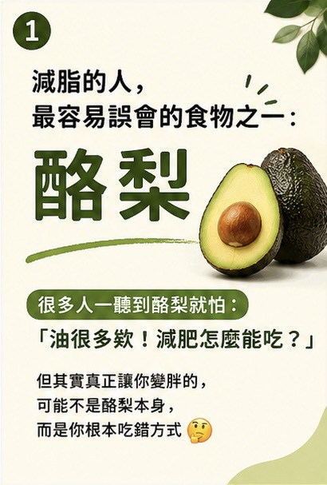
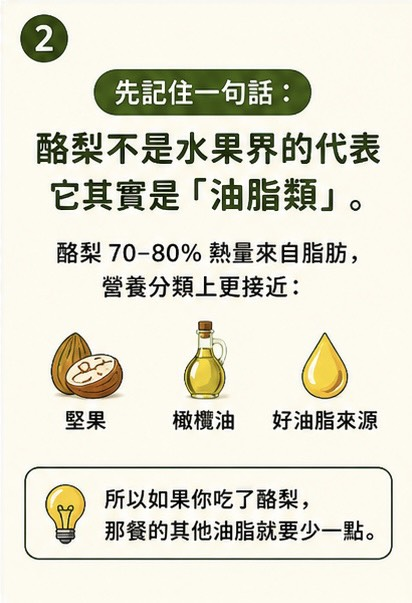
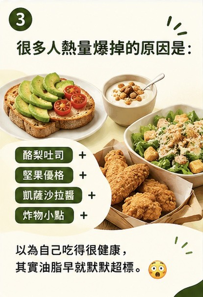
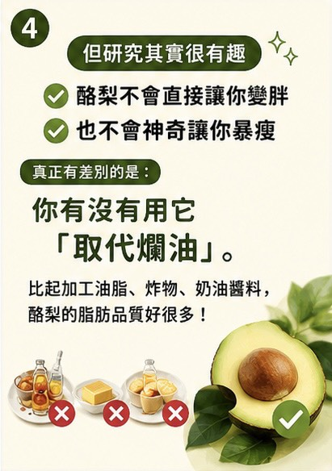
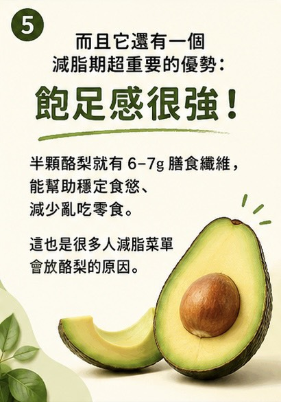
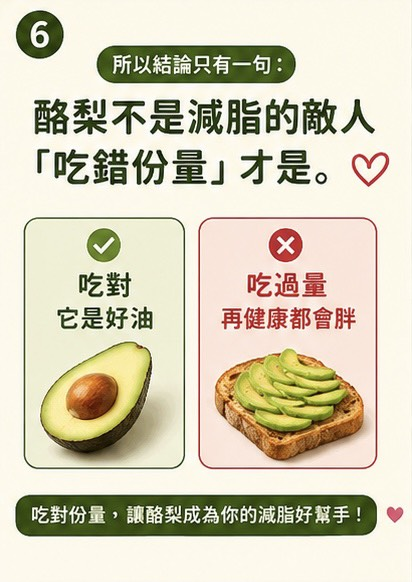

酪梨不是水果界的代表，它更接近油脂類
很多人在減脂期間一聽到酪梨就擔心：「油很多，減肥怎麼能吃？」這個想法只對了一半。酪梨的熱量確實多數來自脂肪，因此不適合把它當一般水果無限制加量；但酪梨也含有單元不飽和脂肪與膳食纖維，若用對方式，反而可以成為減脂飲食中品質較好的油脂來源。
重點是：吃了酪梨，那一餐的其他油脂就要少一點。它比較像堅果、橄欖油、好油脂來源，而不是飯後再多加一份的低熱量水果。






為什麼很多人吃酪梨還是熱量爆掉？
問題常常不是酪梨本身，而是搭配方式。例如一餐同時出現酪梨吐司、堅果優格、凱薩沙拉醬、炸物小點，看起來都是健康元素，但油脂其實已經默默累積。若再加上拿鐵、甜點或高油醬料，整餐熱量很容易超過減脂需求。
酪梨真正的價值：取代較差的油脂
酪梨不會神奇讓人暴瘦，也不會因為單吃就直接變胖。真正值得利用的是它的脂肪品質。比起加工油脂、炸物、奶油醬料，酪梨可以作為較好的油脂替換來源。也就是說，不是在原本餐點上再加酪梨，而是用酪梨取代一部分其他油脂。
減脂期為什麼可以考慮酪梨？
酪梨的飽足感較強，也含膳食纖維。對於容易嘴饞、下午想吃零食、餐後很快又餓的人，適量酪梨可能有助於延長飽足感。但它仍然是高脂食物，份量要算進整餐油脂與總熱量。
怎麼吃比較適合減脂？
- 每次先從四分之一顆到半顆開始，不要整顆無限制加量
- 吃酪梨時，該餐少放沙拉醬、奶油、炸物、堅果或其他油脂
- 把酪梨當成油脂替換，而不是額外加菜
- 搭配足量蛋白質與蔬菜，避免只吃酪梨吐司當一餐
- 若正在控制體重，可觀察一週總熱量與體重變化再調整份量
中醫減重怎麼看酪梨？
從體重管理角度來看，任何食物都不應只分成「能吃」或「不能吃」。更重要的是個人體質、腸胃消化、食慾穩定度、排便、水腫與生活型態。若本身容易脹氣、消化慢或油脂攝取後不舒服，酪梨份量就需要更保守。
若你正在進行中醫減重或埋線調理，可以把平常飲食拍照記錄，回診時和醫師討論，會比單純問「這個能不能吃」更準確。
結論：酪梨不是減脂的敵人，吃錯份量才是
酪梨可以是好油脂，也可以因為份量過多而讓熱量超標。減脂期間不是不能吃，而是要知道它屬於油脂來源，吃了酪梨，就要減少同餐其他油脂。吃對，它可以增加飽足感；吃過量，再健康的食物也可能讓體重停滯。
資料來源與內容說明
本文由小廖中醫師（廖志彰中醫師）依公開衛教資料與臨床專業重新整理。中醫辨證、食療與處方需因人而異，不應用本文自行取代診斷與治療。
本文為一般飲食衛教資訊，不能取代個別診斷與營養處方。若有慢性病、懷孕哺乳、腎臟或心血管疾病，或正在進行減重治療，飲食調整請先與醫師討論。